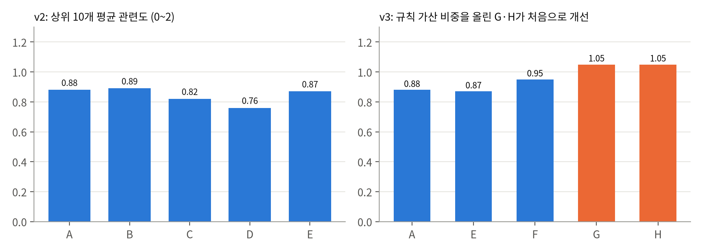
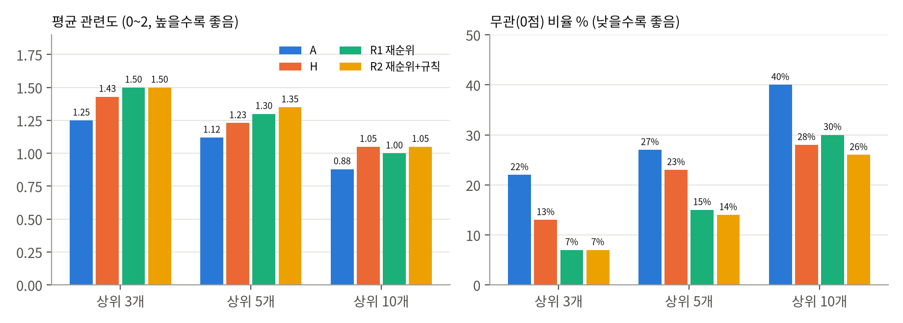
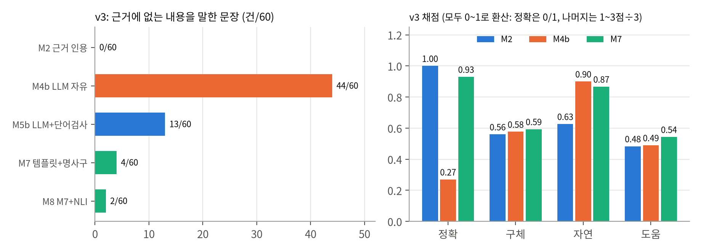
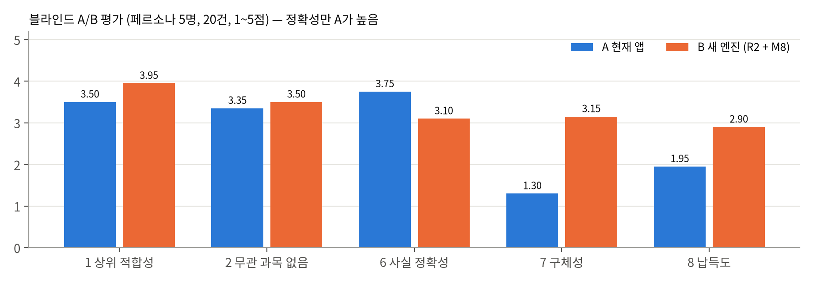
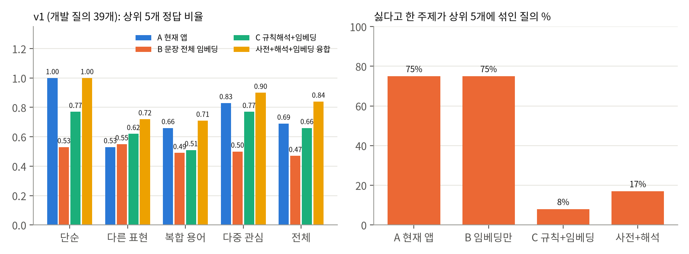
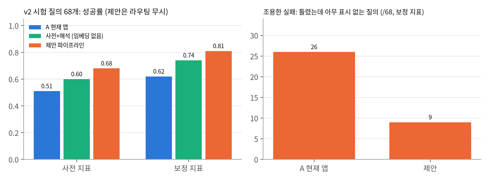

| 대상 독자 | 팀 엔지니어 (회의 자료) |
| 기준일 | 2026-10-11 |
| 범위 | 저장소 experiments/의 실험 5건 (bge-m3 매칭, 이유 문장 엔진, 블라인드 A/B 평가, 질의 해석 v1·v2) |
| 서비스 상태 | 앱(python3 -m curri)은 제품 흐름을 보여주는 골격이며, 엔진은 아직 탑재하지 않았다 |
| 주의 | 모든 채점은 Claude 한 모델의 판단이다. 사람 평가는 아직 없다 (10장) |
3분커리는 학부생이 관심을 입력하면 연구실을 찾아 주고, 연구실을 열면 연관 과목과 "왜 이 과목인가" 문장을 보여 주며, 마지막에 연구 가이드를 제안한다. 현재 앱은 이 흐름의 골격이고 추천은 개념 사전(70개)과 규칙 점수로 돌아간다. 이 보고서는 그 규칙 엔진을 어디에 어떤 엔진으로 바꿀지를 실험으로 가려낸 기록이다.
| 엔진 슬롯 (화면) | 실험 결론 | 근거 | 상태 |
|---|---|---|---|
| ③ 연관 과목 목록 연구실 상세 | 임베딩(bge-m3) + 규칙 가산 + 재순위(bge-reranker-v2-m3). 사전 계산 | 상위 3개 무관 비율 22% → 7%, 평균 관련도 1.25 → 1.50. 상위에서만 신뢰 가능, 순위 기준으로 개수 결정 | 조건부 채택 |
| ④ 과목별 이유 문장 연구실 상세 | 연결은 템플릿, LLM은 과목 내용 명사구만, NLI 검사. 사전 계산 | 근거 없는 내용 44/60 → 4/60(M7) → 2/60(M8). A/B에서 구체성 1.3 → 3.2 | 조건부 채택 정확성 회복 필요 |
| ① 관심 → 연구실 검색 홈 → 목록 | 질의 해석(좋아함/싫어함 분리, 구절 보존) + 사전 검색 + 임베딩 순위 융합. 불확실하면 Gemini 라우터 | 시험 질의 성공률 0.62 → 0.81(보정 지표), 조용한 실패 26 → 9건 /68. 임베딩 단독은 오히려 열세 | 조건부 채택 독립 질의로 재검증 필요 |
| ② 카드의 "왜 이 연구실인가" | 미실험. 이유 문장 엔진의 분업 구조 재사용 예정 | — | 미실험 |
| ⑤ 연구 가이드 | 미실험. 논문 카드 사전 추출 + 템플릿 조합 설계안만 있음 | 논문 데이터가 최근 3개년 기준으로 모여야 함 | 미실험 |
Python 표준 라이브러리 HTTP 서버(curri/server.py)와 SQLite, 정적 프런트엔드(curri/static/app.js)로 구성된다. 추천은 ProfileCatalog(curri/profile_catalog.py)가 맡는다. 외부 패키지·API 키·LLM 호출이 없다. 데이터는 data/에 있다.
| 데이터 | 건수 | 비고 |
|---|---|---|
| lab_profiles.jsonl | 58 | 공동 홈페이지 묶음 후보 단위. ok 51 / thin 5 / insufficient 2. 전부 review_status = draft |
| courses.jsonl / course_profiles.jsonl | 419 | 복합 코드(예: CITE441/EECE423)가 있어 독립 과목 수와 같지 않음 |
| concepts.json | 70 | 개념 사전. keywords(과목 본문 매칭), query_keywords(학생 관심 문장 해석) |
| goldset.jsonl | 25 | 기대 연구실을 담은 평가 초안 (draft) |
범위: 컴퓨터공학·전자전기·IT융합·반도체공학 4개 학과. 검색이 POSTECH 전체 연구실을 제공하는 것이 아니다.
| # | 화면 위치 | 현재 구현 | 입력 의존성 | 실행 시점 |
|---|---|---|---|---|
| ① | 홈의 관심 입력 → 연구실 목록 순서 | search(): 70개 개념 키워드 매칭, 낱말 후퇴 | 사용자 입력 | 온라인 |
| ② | 카드의 "어떤 내용을 보고 연결했나요?" | search()의 reason·evidence. "~관련 내용을 확인했습니다" + 영어 원문. 같은 원문 중복 노출 결함 | 사용자 입력 | 온라인(또는 사전 계산 + 선택) |
| ③ | 상세의 연관 과목 목록 | detail()의 courses: 연구실 core 개념과 과목 태그의 겹침 | 연구실만 | 사전 계산 가능 |
| ④ | 과목마다 붙는 reason 문장 | 개념 템플릿(M1): "제어 지식을 연결해볼 수 있습니다" | 연구실×과목만 | 사전 계산 가능 |
| ⑤ | 연구 가이드 | guide(): 개념 최대 3개에 고정 단계 템플릿 | 질의 + 연구실 + 수강 과목 | 온라인(또는 사전 추출 + 조합) |
③④는 입력이 고정이므로 GPU에서 한 번 계산해 JSON으로 두고 서버는 읽기만 한다. 서버 구조(표준 라이브러리)를 바꾸지 않고, --engine 옵션으로 켜고 끄며 A/B를 비교할 수 있다. ①②⑤는 사용자 입력이 들어가므로 온라인 계산이 필요하고, 이것이 서버에 임베딩을 올릴지 여부의 쟁점이다.
| # | 실험 | 슬롯 | 기간 | 핵심 질문 | 경로 |
|---|---|---|---|---|---|
| E1 | bge-m3 연구실↔과목 매칭 (v2~v4) | ③ | 10-08 ~ 10-09 | 임베딩·규칙·재순위의 어떤 조합이 연관 과목을 가장 잘 고르는가 | experiments/bge_m3/ |
| E2 | 이유 문장 엔진 (v1~v3) | ④ | 10-09 ~ 10-11 | 환각 없이 구체적이고 자연스러운 "왜 이 과목인가" 문장을 어떻게 만드는가 | experiments/reason_engine/ |
| E3 | 블라인드 A/B 사용자 평가 | ③④ | 10-11 | E1·E2를 합친 엔진이 현재 앱보다 나은가 | experiments/ab_test/ |
| E4 | 질의 해석 v1 | ① | 10-11 | 부정·복합 용어·다른 표현을 임베딩이 다룰 수 있는가, 해석 단계가 필요한가 | experiments/query_understanding/V1 |
| E5 | 파이프라인 대조 v2 | ①② | 10-11 | 의도 분기·해석·융합·라우팅을 갖춘 제안 파이프라인이 현재 파이프라인보다 우월한가 | experiments/query_understanding/V2 |
gpuhub submit <노트북>이 노트북 메타데이터의 gpuhub.inputs 파일을 비공개 데이터셋으로 올려 연결하고 gpuhub sync로 결과를 회수한다. 해석·평가는 로컬에서 한다.연구실 상세의 연관 과목은 개념 태그가 겹치는 과목이다. 이를 의미 유사도로 대체할 수 있는지 시험했다. 기준(A)은 v1 방식: 연구실의 주제 문장과 과목의 설명·학습목표·강의계획 줄을 같은 다국어 임베딩 모델(BAAI/bge-m3)로 벡터화하고, 주제×조각 코사인 유사도에서 과목별 상위 3개 평균과 여러 주제 가산으로 연구실×과목 점수를 만든다.
v1 점수의 문제는 자동 지표로 드러났다(아래 표의 A열): 한 과목이 상위 10개에 든 연구실이 29/56(허브 과목), 한 주제가 목록을 독차지한 연구실 18곳, 근거로 쓴 조각이 35자 미만인 비율 31%, 같은 과목이 두 번 나온 중복 28건.
| 버전 | 내용 | 실험 |
|---|---|---|
| A | v1 방식 (기준) | v2~v4 |
| B | A + 조각 정리: 30자 미만·의미 없는 줄 제거, 강의계획은 3줄씩 묶음 | v2 |
| C | B + 허브 보정: 모든 연구실과 두루 가까운 과목을 감점(λ=0.7) | v2 |
| D | C + 주제 분산·교차개설 중복 제거: 같은 주제에서 하나 더 뽑을 때마다 감점(γ=0.03) | v2 |
| E | D + 규칙 엔진 개념 일치 가산점(β=0.04, 제목 일치 시 전체·본문만 일치 시 절반) | v2·v3 |
| F | 허브 보정 λ=0.3, 주제당 최소 1개 보장, β=0.04 | v3 |
| G | F + 규칙 비중 2배(β=0.08) | v3 |
| H | 임베딩 + 규칙만(λ=0, 분산 없음, β=0.08) = 단순 하이브리드 | v3·v4 |
| R1 | H 후보 30개를 재순위 모델(bge-reranker-v2-m3)의 점수로만 재정렬 | v4 |
| R2 | R1 + 규칙 가산점(재순위 점수 + 0.08 × 규칙) | v4 |
재순위 모델은 주제 문장과 과목 설명을 한 쌍으로 함께 읽어 관련도(0~1)를 낸다. 임베딩은 두 문장을 따로 벡터로 바꿔 비교하므로 비용은 낮지만 정밀도가 낮다.
| ID | 가설 | 관찰 | 판정 |
|---|---|---|---|
| H1.1 | 조각 정리(B)가 짧은 근거를 없애고 관련도를 해치지 않는다 | 짧은 근거 31% → 0%, 중복 28 → 33, 평균 관련도 0.88 → 0.89 (동일) | 채택 |
| H1.2 | 허브 보정(C)이 허브를 줄이면서 관련도를 유지한다 | 허브 20 → 10/56. 그러나 평균 0.89 → 0.82, 0점 40% → 45%, nDCG 0.85 → 0.83 | 기각 |
| H1.3 | 주제 분산·중복 제거(D)가 목록 품질을 올린다 | 독점 28 → 0, 중복 32 → 0 이지만 평균 0.76, 0점 48%, nDCG 0.79로 최저 | 기각 |
| H1.4 | 규칙 가산(E)이 D의 손실을 회복한다 | 평균 0.76 → 0.87, 0점 48% → 40%. 단 β=0.04는 A(0.88) 수준에 머묾 | 부분 채택 |
| H1.5 | 보정·분산을 줄이고 규칙 비중을 올리면 A를 넘는다 | G·H: 평균 1.05, 0점 28% (A는 0.88 / 40%) | 채택 |
| H1.6 | 허브 보정·주제 분산이 필요하다 | G(보정·분산 있음)와 H(없음)가 평균 1.05 / 1.05, 0점 28% / 28%로 같음 → 단순한 H로 충분 | 기각 |
| H1.7 | 상대 컷오프로 개수를 줄이면 정확도가 오른다 | 0점 18~19%로 개선. 하지만 개수 평균 약 4개, 회수율 65% → 29% | 조건부 정밀도-회수율 교환 |
| H1.8 | 재순위가 상위 정확도를 올린다 | 상위 3: 평균 1.43 → 1.50, 0점 13% → 7% (H→R1). 상위 5: 1.23 → 1.30, 23% → 15% | 채택 |
| H1.9 | 재순위 점수에 절대 기준점(0.5) 컷오프를 걸 수 있다 | 점수 중앙값 0.002, 90%가 0.05 이하. 0.5를 넘는 과목이 드물어 컷오프가 "최소 3개"로 동작 | 기각 |
| H1.10 | 재순위에 규칙을 더하면(R2) 10개 전체도 좋아진다 | R2 vs R1: 상위 5 1.35 vs 1.30, 10개 1.05/26% vs 1.00/30%. 차이가 작음 | 약한 채택 |


| 지표 | A | B | C | D | E |
|---|---|---|---|---|---|
| 최대 허브 (한 과목이 상위 10에 든 연구실 수 / 56) | 29 | 20 | 10 | 9 | 13 |
| 한 주제 독점 연구실 | 18 | 24 | 28 | 0 | 0 |
| 짧은 근거 비율 | 31% | 0% | 0% | 1% | 1% |
| 중복 | 28 | 33 | 32 | 0 | 0 |
| 은정답 재현율 | 0.56 | 0.52 | 0.51 | 0.48 | 0.73 |
| 평균 관련도 (0~2) / 0점 비율 | 0.88 / 40% | 0.89 / 40% | 0.82 / 45% | 0.76 / 48% | 0.87 / 40% |
허브·독점·중복 지표는 크게 개선됐지만 사람이 느끼는 관련도는 같거나 낮아졌다. 이런 "목록을 고르게 만드는" 교정은 관련 과목이 적은 연구실(안성수·한해욱·유환조)에서 억지로 10개를 채우는 문제를 해결하지 못한다. 모든 버전에서 상위 10개의 약 40%가 무관했고, 1~3위 평균은 1.0~1.55점, 6위 이후는 0.4~0.7점이었다.
연구실 상세의 과목마다 "왜 이 과목인가" 문장이 붙는다. 현재 문장(M1)은 개념 템플릿이라 모호하다("제어 지식을 연결해볼 수 있습니다"). 연구실×과목 쌍(E1의 R2 순위)을 입력으로 세 단계를 거친다.
(연구실, 과목) 쌍 ← E1의 R2 순위
① 근거 선택: 연구실 주제 문장 × 과목 문장 중 가장 잘 맞는 한 쌍 (bge-reranker-v2-m3)
품질 기준: 시험·과제·"Introduction" 같은 일반 문장 제외
② 문장 생성: M1~M8 (방법 비교)
③ 검증: 근거 밖 단어 비율, 과장 표현, 깨진 글자, (v3) NLI 함의
입력 데이터(연구실 주제·과목 근거)가 바뀌어도 ①③은 그대로 쓰고 ②만 교체해 비교할 수 있게 설계했다. 평가: 연구실 12곳 × 상위 5개 = 60쌍, 채점 항목 faithful(0/1)과 specific·fluent·useful(1~3).
| 방법 | 설명 | 버전 |
|---|---|---|
| M1 | 개념 템플릿(현재 앱 방식) | v1 |
| M2 | 근거 인용: "이 연구실의 '주제' 연구와 연결돼요. 이 과목의 과목 설명에서 "원문 문장"를 다뤄요." | v1~v3 |
| M3 | 키워드 템플릿: 근거에서 주제와 가까운 구절 2개 | v1 |
| M4 / M4b | 로컬 LLM(Qwen2.5-7B-Instruct 4비트, nf4) 자유 생성 / 프롬프트·깨짐 표시 개선판 | v1 / v2·v3 |
| M5 / M5b | M4 + 검증, 실패 시 M2로 대체. 검증은 근거 밖 단어 비율 기준 / 깨진 글자·과장 표현 포함 | v1 / v2·v3 |
| M2k | 영어 근거를 한국어로 번역해 인용 | v2 |
| M6 | M4b + 재순위 모델의 "생성 문장↔근거" 일치도 검사 | v2 |
| M7 | 연결은 템플릿, LLM은 과목이 가르치는 내용을 짧은 한국어 명사구로 옮기는 일만 (예: "PID Control" → "PID 제어") | v3 |
| M8 | M7 + 다국어 NLI(mDeBERTa-v3-xnli)로 "이 수업은 {명사구}를 다룬다"가 근거에서 도출되는지 검사, 실패 시 M2 | v3 |
| ID | 가설 | 관찰 | 판정 |
|---|---|---|---|
| H2.1 | LLM 생성(M4)이 템플릿·인용보다 자연스럽고 도움이 된다 | 자연 2.73, 도움 1.90 (M2는 1.88 / 1.65). 그러나 27%(16/60)가 근거에 없는 내용: absorption→adsorption, 연구실 프로젝트 언급, 깨진 토큰("제어_technologies", "enrich。") | 부분 |
| H2.2 | 검증(M5)으로 환각을 제거할 수 있다 | 지어낸 16건 중 15건을 걸렀으나 83%를 M2로 대체. 영어 근거를 한국어로 바꾼 정상 문장도 "근거 밖 단어"로 판정 | 부분 |
| H2.3 | 프롬프트 개선(M4b)이 환각을 줄인다 | 부정확 27%로 v1과 같음. 대부분 "시뮬레이션 기법 → 포논 연구의 중요한 도구" 같은 연결 주장 | 기각 |
| H2.4 | 재순위 일치도(M6)로 정확성을 판정할 수 있다 | 정확한 문장 중앙값 0.975, 부정확 0.919로 거의 구분 안 됨. 부정확 14건 중 8건만 걸렀고 정확한 14건을 잘못 대체 | 기각 |
| H2.5 | 단어 비교 검사(M5b)를 개선하면 쓸 만하다 | 부정확 14건 중 13건을 걸렀으나 정확한 37건 중 19건도 대체(대체율 83% → 63%) | 부분 |
| H2.6 | 영어 근거를 한국어로 번역(M2k)하면 읽기 좋아진다 | 새 오류: "Deep learning"→"Depth Learning", "NN"→"나이브 베이지안", "poly-phase"→"폴파이". 정확 1.00 → 0.94 | 기각 |
| H2.7 | 재순위 점수 하위 15%는 근거가 부실하므로 문장을 생략한다 | 생략 9건 중 4건이 잘못(신호 및 시스템 ↔ 레이더 신호처리 등) | 기각 |
| H2.8 | 깨진 글자 검사가 효과가 있다 | M5b·M6에서 깨짐 0건 | 채택 |
| H2.9 | LLM에게 연결을 맡기지 않고 명사구만 시키면(M7) 환각이 줄고 자연스러움은 유지된다 | 부정확 44/60(M4b) → 4/60. 자연 2.60(M4b 2.70), 도움 1.63으로 5개 방법 중 최고 | 채택 |
| H2.10 | NLI 검사(M8)가 단어 비교보다 덜 과잉 대체한다 | M7 문장 16건(27%)만 M2로 대체(단어 비교 63%). 부정확 4건 중 2건을 걸러 정확 0.97 | 채택 |

| 방법 | 정확(0~1) | 구체(1~3) | 자연(1~3) | 도움(1~3) | 부정확 | 근거 밖 단어 | 깨진 글자 |
|---|---|---|---|---|---|---|---|
| M2 영어 근거 인용 | 1.00 | 1.68 | 1.88 | 1.45 | 0/60 | 11.4% | - |
| M4b LLM 자유 생성 | 0.27 | 1.73 | 2.70 | 1.47 | 44/60 | 40.1% | 6 |
| M5b LLM + 단어 비교 | 0.78 | 1.70 | 2.15 | 1.48 | 13/60 | 17.5% | 19 |
| M7 템플릿 + LLM 명사구 | 0.93 | 1.78 | 2.60 | 1.63 | 4/60 | 0.0% | 0 |
| M8 M7 + NLI | 0.97 | 1.77 | 2.43 | 1.58 | 2/60 | 3.6% | 8 |
v3 채점은 "직접 적용된다·필수적이다·핵심이다"처럼 근거에 없는 연결 주장을 문장 속 과목 내용이 맞아도 faithful 0으로 매겼다. 그래서 M4b의 정확도가 v2의 0.73에서 v3의 0.27로 달라졌다. v3 수치는 같은 표 안의 방법끼리만 비교한다. 방법마다 문장 형태가 달라 완전한 블라인드도 아니다.
| 항목 | 내용 |
|---|---|
| 목적 | E1(R2 순위)과 E2(M8 문장)를 합친 엔진(B)이 현재 앱(A)보다 나은지 평가 |
| A / B | A = 앱 ProfileCatalog.detail()의 상위 5개 과목과 이유 문장. B = bge-m3 R2 상위 5개 + M8 이유 문장 |
| 범위 | B 결과가 이미 계산된 연구실 12곳. 새 GPU 실행 없이 기존 산출물 재사용 |
| 평가자 | 5개 페르소나(전자과 2, 컴공 3)를 Claude가 한 명씩 연기. 페르소나마다 연구실 4곳, 총 20건. luna 모델은 이 환경에서 호출할 수 없어 대체 |
| 블라인드 | A/B를 X/Y로 숨기고 건마다 순서를 무작위로 섞음. 대응표는 채점 후에 열었음 |
| 평가 항목(5개) | 1 상위 과목 적합성 · 2 무관 과목 없음 · 6 이유 문장 사실 정확성 · 7 구체성 · 8 납득도 (1~5점) |

| 항목 | A 현재 앱 | B 새 엔진 |
|---|---|---|
| 1 상위 과목 적합성 | 3.50 | 3.95 |
| 2 무관 과목 없음 | 3.35 | 3.50 |
| 6 사실 정확성 | 3.75 | 3.10 |
| 7 구체성 | 1.30 | 3.15 |
| 8 납득도 | 1.95 | 2.90 |
| 전체 평균 | 2.77 | 3.32 |
| ID | 가설 | 관찰 | 판정 |
|---|---|---|---|
| H3.1 | B가 A보다 매칭과 이유 문장 품질이 높다 | 5개 항목 중 4개 우위. 정확성은 하락(3.75 → 3.10) | 부분 채택 |
사용자가 "나는 로봇은 싫은데 컴퓨터 아키텍처는 좋아요"라고 입력했다고 하자. 현재 앱은 개념 사전으로 robotics만 잡고(아키텍처는 사전에 없음) 로봇 연구실 4곳이 상위에 나온다(정반대 결과). 문장 전체를 임베딩해도 "로봇 싫다"는 로봇 쪽 벡터가 된다. 또 "컴퓨터 아키텍처"가 "컴퓨터"로 쪼개지면 엉뚱한 연구실이 나온다.
| 방법 | 질의 처리 | 검색 |
|---|---|---|
| A | 개념 사전 키워드 (현재 앱) | 규칙 점수 |
| B | 없음, 문장 전체 | bge-m3 임베딩, 연구실 문서 중 최대 유사도 |
| C | 규칙으로 좋아함/싫어함 분리, 구절 유지 | 구절별 임베딩. 점수 = 좋아함 평균 z − λ·싫어함 최대 z |
| D | Qwen2.5-7B가 JSON으로 분리 (구절 그대로) | C와 같음 |
연구실 문서: 0 = 프로필(요약 + 주제 라벨 + 원문 인용, 359개), 1 = 0 + 앱 교수의 대표 논문 제목·초록 500자(873개). λ ∈ {0, 0.5, 1, 2}. 질의는 39개(단순 6, 다른 표현 8, 부정 8, 복합 용어 7, 다중 관심 6, 약한 부정 4)이며, 정답은 연구실 프로필의 primary 주제 개념으로 정의했다.
| ID | 가설 | 관찰 | 판정 |
|---|---|---|---|
| H4.1 | 임베딩 단독이 키워드 사전을 대체할 수 있다 | 전체 P@5: B 0.47 / A 0.69. 단순 질의 0.53 vs 1.00(단, 정답이 사전 개념 기준이라 A에 유리) | 기각 |
| H4.2 | 문장 임베딩은 부정 질의에서 싫은 주제를 걸러 내지 못한다 | B의 싫은 주제 혼입 75%(A와 같음) | 지지 |
| H4.3 | 좋아함/싫어함 분리가 부정 처리를 해결한다 | 혼입 75% → 8%(C) ~ 17%. 사전 검색에 해석만 붙여도 17%(임베딩 불필요) | 채택 |
| H4.4 | 싫어함 감점(λ)이 추가 효과가 있다 | λ=0 → 1: 혼입 17% → 8%. 효과는 있으나 작음. 주효과는 "싫은 구절을 질의에서 빼는 것" | 약함 |
| H4.5 | LLM 해석이 규칙 해석보다 낫다 | 둘 다 P@5 0.66. LLM 형식 실패 2건 제외(37건)해도 같음. 질의당 0.9초(T4) | 기각 현 데이터에서 |
| H4.6 | 대표 논문을 문서에 넣으면 검색이 좋아진다 | +0.00~0.04, 복합 용어·부정에서는 오히려 낮아짐. 대표 논문(51개 연구실)이며 최근 3개년 아님 | 기각 |
| H4.7 | 사전 + 해석 + 임베딩 순위 융합이 가장 좋다 | P@5 0.84(A 0.69), 부정 혼입 8%. 같은 39개 질의에서 사후에 확인한 탐색적 결과 | 탐색적 채택 |

입력 → L0 정규화 동의어(아키텍처→컴퓨터 구조, 챗GPT→언어모델 등) → L1 의도 분기 검색 / 너무 넓음 / 진로 고민 / 범위 밖 / 무의미 → L2 해석 좋아함·싫어함 분리, 구절 보존, 우선순위·대조 표현은 "불확실" 표시 → L3 검색 사전 검색(해석 반영) + 임베딩 검색 → RRF 순위 융합 → L4 확신도 검사 확실 → 결과 / 불확실 → 라우터(Gemini)를 호출한 것으로 기록하고 끝
라우팅 사유(L4): 좋아함이 비었음, 부정 표현이 있는데 싫어함을 못 뽑음, 우선순위·대조 표현("~도 좋지만", "더 끌려요", "이미 해봐서"), 70자 초과, 사전에도 임베딩에도 안 맞는 구절, 전체 질의의 검색 유사도 낮음(개발 질의 10퍼센타일 임계: 구절 0.529, 질의 0.539). 라우터의 결과는 튜닝할 수 없으므로 "호출했다"는 사실로 끝내고 호출 비율과 조용한 실패만 평가한다.
FROZEN_BEFORE_TEST.sha256), 독립 시험용 질의 90개(검색 68 + 비검색 22: 너무 넓음 6, 진로 고민 6, 범위 밖 6, 무의미 4)를 작성하고 한 번만 실행했다. 결과를 본 뒤 코드를 고치지 않았다.search(질의 전체), 사전+해석(임베딩 없음), 제안(라우팅 무시), 제안(라우팅 포함).
| 지표 | A 현재 앱 | 제안 파이프라인 |
|---|---|---|
| 성공률 (사전 지표) | 0.51 | 0.62 ~ 0.75 |
| 성공률 (보정 지표) | 0.62 | 0.74 ~ 0.87 |
| 조용한 실패 (틀렸는데 표시 없음, 보정) | 26 / 68 | 9 / 68 |
| 질의별 승패 (보정) | 4 | 17 (동률 47) |
| 성공률 차이 P−A, 95% 구간 (보정, 질의 부트스트랩) | +0.07 ~ +0.32 | |
| 싫은 주제 혼입 (부정 질의) | 85% | 사전+해석 8%, 제안 23% |
| 라우팅 (Gemini 호출) | — | 13% (9/68) |
성공률 범위: 하한은 라우팅된 질의를 전부 실패로, 상한은 전부 성공으로 본 값.
| 유형 | 부정 | 다중 관심 | 다른 표현 | 목적·문제 | 복합 용어 | 단순 | 수업 기반 |
|---|---|---|---|---|---|---|---|
| A | 0.10 | 0.62 | 0.42 | 0.38 | 0.88 | 0.62 | 0.50 |
| 제안 | 0.67 | 0.88 | 0.67 | 0.57 | 1.00 | 0.62 | 0.50 |
| 의도 | 개수 | A: 결과를 보여줌(오답) | 제안: 정답 / 라우팅 / 오답 |
|---|---|---|---|
| 진로 고민 | 6 | 3 | 6 / 0 / 0 |
| 범위 밖 | 6 | 4 | 4 / 1 / 1 ("임상 진료랑 환자 치료 연구") |
| 너무 넓음 | 6 | 1 | 4 / 2 / 0 |
| 무의미 | 4 | 0 | 3 / 1("asdf") / 0 |
A는 결과를 내지 않으면 "정답"으로 쳤다(관대한 기준). "컴퓨터가 좋아요"처럼 사전에 안 걸려 빈 결과를 낸 경우도 정답에 포함된다.
| ID | 가설 | 관찰 | 판정 |
|---|---|---|---|
| H5.1 | 제안 파이프라인이 현재보다 성공률이 높다 | 0.62 → 0.81(보정), 구간 +0.07~+0.32 | 채택 |
| H5.2 | 라우팅 신호가 틀릴 질의를 잡는다 | 13%를 라우팅. 우선순위 표현·애매한 구어·범위 밖·무의미 입력을 포착. 조용한 실패 26 → 9. 단 일부 실패는 신호로 못 잡음(아래) | 부분 채택 |
| H5.3 | 의도 분기가 비검색 질의를 올바로 처리한다 | 진로 6/6. 범위 밖 1건 누락(사전에 없는 말), 너무 넓음 2건·무의미 1건은 라우팅 | 채택 |
| H5.4 | 임베딩 융합이 사전+해석에 더해 개선한다 | 성공률은 0.74 → 0.81(보정)이나 부정 질의 혼입은 8% → 23%로 오히려 증가. 임베딩이 싫은 주제의 연구실을 끌어올리는 경우가 있음 | 혼재 |
"무엇을 해봤고 왜 접었는가"를 한곳에 모았다. 같은 시도를 반복하지 않기 위한 목록이다.
| 실험 | 시도 | 기각 근거 | 대신 택한 것 |
|---|---|---|---|
| E1 | 허브 보정(λ)으로 두루 가까운 과목 감점 | 허브 지표만 좋아지고 관련도 0.89 → 0.82 | 규칙 가산 + 재순위 |
| E1 | 주제 분산·중복 제거 강제 | 독점·중복은 0이 됐으나 관련도 최저(0.76). 관련 과목이 적은 연구실에서 억지로 채움 | 순위 기준 목록 길이 |
| E1 | 재순위 점수의 절대 기준점 컷오프 | 점수 중앙값 0.002, 90%가 0.05 이하 | 순위 기반(상위 3~5) |
| E1 | 상대 컷오프로 4개만 표시 | 정확도는 오르나 회수율 65% → 29% | "핵심 연관" + "더 보기" |
| E2 | LLM 자유 생성 문장 | 환각 27%(v1·v2), v3 기준 44/60 | 템플릿 + 명사구 |
| E2 | 프롬프트 개선으로 환각 억제 | v1과 같은 27%. 환각은 "연결 주장" | 역할 분리 |
| E2 | 재순위 일치도로 정확성 검사 | 정확 0.975 / 부정확 0.919, 구분 불가 | 다국어 NLI |
| E2 | 단어 비교 검사 | 63~83%를 과잉 대체(영어→한국어 환언을 오판) | NLI(27% 대체) |
| E2 | 영어 근거 한국어 번역 인용 | 번역이 새 오류 생성(Depth Learning 등) | 영어 인용 + 명사구만 번역, 용어 사전 |
| E2 | 재순위 점수 하위 15% 문장 생략 | 9건 중 4건 오판 | 정보성 있는 근거가 없을 때만 생략 |
| E4 | 임베딩 단독 검색 | P@5 0.47 < 0.69, 부정 혼입 75% | 사전 + 해석 + 임베딩 융합 |
| E4 | LLM 질의 해석(현 단계) | 규칙과 동일, GPU·API 필요 | 규칙 해석 + 불확실 시 Gemini |
| E4 | 대표 논문 문서 추가 | +0.00~0.04, 최근 3개년 아님 | 최근 3개년 논문 확보 후 재실험 |
| 위협 | 내용 | 완화·계획 |
|---|---|---|
| 채점자 독립성 | 채점(Claude), 질의 작성(Claude), 파이프라인 설계(Claude)가 같은 계열. 5명의 페르소나도 한 모델이 연기 | 사람 평가. 학부생 몇 명이 같은 블라인드 패킷을 채점 |
| 순환 정답 | E4·E5 정답이 개념 사전과 같은 개념 체계라 사전 검색에 유리 | 설문 자유 서술·팀원이 쓴 질의로 독립 세트 구성, 정답 연구실을 사람이 지정 |
| 작은 표본 | 연구실 12~20곳, 질의 39+90개 | 58곳 전체와 질의 확대 |
| 기준 변경 | E2 v3 채점 기준이 v2와 다름. E5 보정 지표는 결과를 본 뒤 추가 | 변경 사실과 양쪽 수치를 모두 기록 |
| 블라인드 불완전 | 방법마다 문장 형태가 달라 A/B가 드러남(E3: 20건 전부 추정 일치) | 문장 형태 정규화 또는 사람이 한 가지 형식으로 평가 |
| 사후 분석 과적합 | E4의 융합·E5의 보정 지표는 같은 데이터에서 사후 확인 | 독립 세트에서 사전 등록 후 재평가 |
| 데이터 신뢰도 | 프로필 58개 전부 draft, 연구 소개가 비어 있는 연구실 존재, 논문 데이터는 대표 10편(최근 3개년이 아님) | 팀원의 최근 3개년 논문 수집 + ID 매핑 |
팀원이 만든 카탈로그 페이지(POSTECH Lab Catalog v2, 지도교수 365건, 대표 논문 2,449편, 초록 86%)를 분석했다. 품질은 좋지만 가이드(슬롯 ⑤)에는 부족하다.
lab_id가 없고 교수 이름이 기준이다. 앱 교수 60명은 이름으로 모두 찾았고, 동명이인은 앱 교수 중 김정훈 한 명이며 학과·영문 이름으로 구분된다.| 실행 | 시간 | 내용 |
|---|---|---|
| reason-engine-v3 | 7.15분 | 이유 문장 M2~M8, 60쌍 |
| query-understanding-v1 | 4.87분 | 임베딩 + Qwen 해석, 질의 39개 |
| query-understanding-v2 | 4.58분 | 구절 282개 임베딩 |
| 합계 (Kaggle 기록 기준) | 약 16.6분 (0.28시간) | bge-m3 v2~v4는 Colab 실행이라 시간이 기록에 없음 |
시중 T4 클라우드 요금(조사 기준 시간당 약 $0.35~0.63)으로 환산하면 위 합계는 약 $0.10~0.17이다. A/B 평가 5명 구간은 새 GPU 실행이 없었다. 요금은 집계 사이트 기준이므로 결제 전에 업체 요금표를 확인한다.
# GPU 실험 제출 (노트북 메타데이터의 gpuhub.inputs 파일이 비공개 데이터셋으로 연결됨) gpuhub submit experiments/query_understanding/query_understanding_v2.ipynb gpuhub sync # 상태 갱신, 완료된 결과 회수 # 로컬 평가 python3 -I experiments/query_understanding/phase1.py # L0~L2, 구절 목록 생성 python3 -I experiments/query_understanding/phase2.py experiments/query_understanding/V2/sims_v2.json python3 -I experiments/query_understanding/analyze_v2.py # 보정 지표, 부트스트랩 python3 experiments/query_understanding/evaluate.py <ranks_v1.json> # v1 지표 (A 포함)
| 순서 | 작업 | 선행 조건 | 예상 영향 |
|---|---|---|---|
| 1 | 카드의 같은 원문 중복 노출 제거(슬롯 ②) | 없음. 코드만 수정 | 작은 결함 수정, 위험 없음 |
| 2 | 규칙 질의 해석을 search() 앞에 추가(L0~L2) + 의도 분기(진로·범위 밖·너무 넓음) | E5의 남은 실패 1~4 개선 + 독립 질의 재평가 | 부정 혼입·잘못된 결과 대폭 감소 |
| 3 | R2 순위와 M8 문장 사전 계산 JSON + --engine 옵션(슬롯 ③④) | 용어 사전, 빈 명사구·조사 처리, 58곳 확대, 정확성 회복, 사람 표본 검증 | 구체성·적합성 개선 |
| 4 | 임베딩 보조 검색 + RRF + L4 라우팅(슬롯 ①) | 서버에 임베딩 허용 여부 결정, Gemini 연동 정책 | 다른 표현 질의 성공률 |
| 5 | 연구 가이드(슬롯 ⑤): 논문 카드 사전 추출 + 템플릿 조합 | 최근 3개년 논문 + ID 매핑, 카드 추출 정확성 실험 | 가이드의 사실성 |
| 용어 | 설명 |
|---|---|
| bge-m3 | BAAI의 다국어 임베딩 모델. 문장을 벡터로 바꿔 코사인 유사도로 비교 |
| 재순위(rerank) | 후보 쌍을 한 입력으로 함께 읽는 크로스인코더(bge-reranker-v2-m3)로 관련도 0~1을 다시 매김. 정밀하지만 느려 후보 30개에만 적용 |
| 허브(hub) | 모든 연구실과 두루 가까워 여러 연구실의 상위에 반복해서 나오는 과목 |
| 은(silver) 정답 | 사람 정답이 아니라 규칙 엔진에서 "과목 제목에 연구실 핵심 주제가 들어간" 확실한 연결 |
| RRF | Reciprocal Rank Fusion. 여러 순위의 1/(k+순위)를 합산해 하나로 융합 (여기서 k=10) |
| P@5, nDCG@5 | 상위 5개 중 정답 비율, 순위를 고려한 정규화 누적이득 |
| NLI | 자연어 추론. 근거 문장이 가설 문장을 함의하는지 판정(여기서는 다국어 mDeBERTa) |
| 조용한 실패 | 틀렸는데 라우팅·되묻기 같은 표시가 없어 사용자가 잘못된 결과를 그대로 받는 경우 |
| 라우터 | 불확실한 질의를 외부 LLM(Gemini)이 해석하도록 넘기는 단계. 해석만 하고 검색·추천은 하지 않는다 |
| gpuhub | Kaggle GPU 노트북 제출·결과 회수 도구 (tools/gpu) |